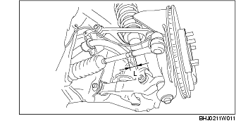
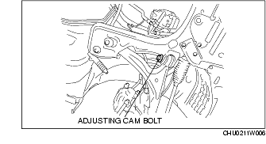
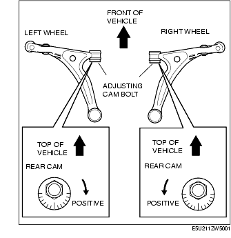
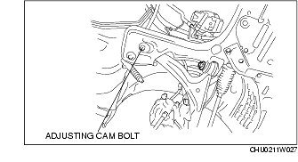
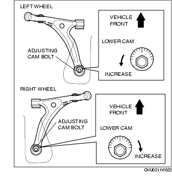

Workshop Manual ➭ SUSPENSION ➭ WHEEL ALIGNMENT ➭ FRONT WHEEL ALIGNMENT
FRONT WHEEL ALIGNMENT
id021100800200
{: #wp1059776}
**Front wheel alignment [16-inch wheel]
+--------------------------------------------------------------------------------------------------------------------------------------------------------------------------------------------------------+------------------------------------+ | Item {: #wp1059898} | Specification {: #wp1059904} | +============================================================+======================================================================================================+====================================+====================================+ | Total toe-in {: #wp1059792} | Tire [Tolerance ±4 mm {0.15 in}] {: #wp1059794} | (mm {in}) {: #wp1059850} | 2 {0.08} {: #wp1059853} | +------------------------------------------------------------+------------------------------------------------------------------------------------------------------+------------------------------------+------------------------------------+ | | Rim inner {: #wp1059930} | (mm {in}) {: #wp1059933} | 1.2±2.4 {0.05±0.09} {: #wp1059936} | +------------------------------------------------------------+------------------------------------------------------------------------------------------------------+------------------------------------+------------------------------------+ | | | +------------------------------------------------------------+------------------------------------------------------------------------------------------------------+------------------------------------+------------------------------------+ | Steering angle [Tolerance ±3°] {: #wp1059953} | Inner {: #wp1059959} | 38°42' {: #wp1059962} | +------------------------------------------------------------+------------------------------------------------------------------------------------------------------+------------------------------------+------------------------------------+ | | Outer {: #wp1059972} | 32°54' {: #wp1059975} | | +------------------------------------------------------------+------------------------------------------------------------------------------------------------------+------------------------------------+------------------------------------+ | Steering axis inclination (Reference value) {: #wp1060105} | 10°39' {: #wp1060114} | +------------------------------------------------------------+------------------------------------------------------------------------------------------------------+------------------------------------+------------------------------------+ | Camber {: #wp1060130} [Tolerance ±1°] {: #wp1060202} | Vehicle height: From the end of the front fender to the center of the wheel (mm {in}) {: #wp1060133} | 356-365 {14.1-14.3} {: #wp1060136} | -0°41' {: #wp1060139} | +------------------------------------------------------------+------------------------------------------------------------------------------------------------------+------------------------------------+------------------------------------+ | | | 366-375 {14.5-14.7} {: #wp1060188} | -0°22' {: #wp1060191} | +------------------------------------------------------------+------------------------------------------------------------------------------------------------------+------------------------------------+------------------------------------+ | | | 376-385 {14.8-15.1} {: #wp1060175} | -0°06' {: #wp1060178} | +------------------------------------------------------------+------------------------------------------------------------------------------------------------------+------------------------------------+------------------------------------+ | | | 386-395 {15.2-15.5} {: #wp1060162} | 0°09' {: #wp1060165} | +------------------------------------------------------------+------------------------------------------------------------------------------------------------------+------------------------------------+------------------------------------+ | | | 396-405 {15.6-15.9} {: #wp1060149} | 0°21' {: #wp1060152} | +------------------------------------------------------------+------------------------------------------------------------------------------------------------------+------------------------------------+------------------------------------+ | Caster {: #wp1060315} [Tolerance ±1°] {: #wp1060387} | Vehicle height: From the end of the rear fender to the center of the wheel (mm {in}) {: #wp1060318} | 354-363 {14.0-14.2} {: #wp1060321} | 6°27' {: #wp1060324} | +------------------------------------------------------------+------------------------------------------------------------------------------------------------------+------------------------------------+------------------------------------+ | | | 364-373 {14.4-14.6} {: #wp1060373} | 6°13' {: #wp1060376} | +------------------------------------------------------------+------------------------------------------------------------------------------------------------------+------------------------------------+------------------------------------+ | | | 374-383 {14.8-15.0} {: #wp1060360} | 5°59' {: #wp1060363} | +------------------------------------------------------------+------------------------------------------------------------------------------------------------------+------------------------------------+------------------------------------+ | | | 384-393 {15.2-15.4} {: #wp1060347} | 5°45' {: #wp1060350} | +------------------------------------------------------------+------------------------------------------------------------------------------------------------------+------------------------------------+------------------------------------+ | | | 394-403 {15.6-15.8} {: #wp1060334} | 5°31' {: #wp1060337} | +------------------------------------------------------------+------------------------------------------------------------------------------------------------------+------------------------------------+------------------------------------+} | degree {: #wp1059946} | 0°11'±22' {: #wp1059949{: #wp1063586}Front wheel alignment [17-inch wheel]
+--------------------------------------------------------------------------------------------------------------------------------------------------------------------------------------------------------+------------------------------------+ | Item {: #wp1060624} | Specification {: #wp1060630} | +============================================================+======================================================================================================+====================================+====================================+ | Total toe-in {: #wp1060518} | Tire [Tolerance ±4 mm {0.15 in}] {: #wp1060520} | (mm {in}) {: #wp1060576} | 2 {0.08} {: #wp1060579} | +------------------------------------------------------------+------------------------------------------------------------------------------------------------------+------------------------------------+------------------------------------+ | | Rim inner {: #wp1060656} | (mm {in}) {: #wp1060659} | 1.4±2.8 {0.06±0.11} {: #wp1060662} | +------------------------------------------------------------+------------------------------------------------------------------------------------------------------+------------------------------------+------------------------------------+ | | | +------------------------------------------------------------+------------------------------------------------------------------------------------------------------+------------------------------------+------------------------------------+ | Steering angle [Tolerance ±3°] {: #wp1060679} | Inner {: #wp1060685} | 38°42' {: #wp1060688} | +------------------------------------------------------------+------------------------------------------------------------------------------------------------------+------------------------------------+------------------------------------+ | | Outer {: #wp1060698} | 32°54' {: #wp1060701} | | +------------------------------------------------------------+------------------------------------------------------------------------------------------------------+------------------------------------+------------------------------------+ | Steering axis inclination (Reference value) {: #wp1060827} | 10°47' {: #wp1060836} | +------------------------------------------------------------+------------------------------------------------------------------------------------------------------+------------------------------------+------------------------------------+ | Camber {: #wp1060852} [Tolerance ±1°] {: #wp1060924} | Vehicle height: From the end of the front fender to the center of the wheel (mm {in}) {: #wp1060855} | 351-360 {13.8-14.1} {: #wp1060858} | -0°51' {: #wp1060861} | +------------------------------------------------------------+------------------------------------------------------------------------------------------------------+------------------------------------+------------------------------------+ | | | 361-370 {14.3-14.5} {: #wp1060910} | -0°31' {: #wp1060913} | +------------------------------------------------------------+------------------------------------------------------------------------------------------------------+------------------------------------+------------------------------------+ | | | 371-380 {14.7-14.9} {: #wp1060897} | -0°14' {: #wp1060900} | +------------------------------------------------------------+------------------------------------------------------------------------------------------------------+------------------------------------+------------------------------------+ | | | 381-390 {15.0-15.3} {: #wp1060884} | 0°02' {: #wp1060887} | +------------------------------------------------------------+------------------------------------------------------------------------------------------------------+------------------------------------+------------------------------------+ | | | 391-400 {15.4-15.7} {: #wp1060871} | 0°15' {: #wp1060874} | +------------------------------------------------------------+------------------------------------------------------------------------------------------------------+------------------------------------+------------------------------------+ | Caster {: #wp1061037} [Tolerance ±1°] {: #wp1061109} | Vehicle height: From the end of the rear fender to the center of the wheel (mm {in}) {: #wp1061040} | 349-358 {13.8-14.0} {: #wp1061043} | 6°34' {: #wp1061046} | +------------------------------------------------------------+------------------------------------------------------------------------------------------------------+------------------------------------+------------------------------------+ | | | 359-368 {14.2-14.4} {: #wp1061095} | 6°20' {: #wp1061098} | +------------------------------------------------------------+------------------------------------------------------------------------------------------------------+------------------------------------+------------------------------------+ | | | 369-378 {14.6-14.8} {: #wp1061082} | 6°06' {: #wp1061085} | +------------------------------------------------------------+------------------------------------------------------------------------------------------------------+------------------------------------+------------------------------------+ | | | 379-388 {15.0-15.2} {: #wp1061069} | 5°53' {: #wp1061072} | +------------------------------------------------------------+------------------------------------------------------------------------------------------------------+------------------------------------+------------------------------------+ | | | 389-398 {15.4-15.6} {: #wp1061056} | 5°39' {: #wp1061059} | +------------------------------------------------------------+------------------------------------------------------------------------------------------------------+------------------------------------+------------------------------------+**{: #wp1060502}} | degree {: #wp1060672} | 0°11'±22' {: #wp1060675
*Note*{: #wp1061224}
• Unloaded vehicle: Fuel tank is full. Engine coolant and engine oil are at specified level. Jack and tools are in designated position. {: #wp1063427}• Difference between the left and right dimension for camber and caster is within 1°.
Steering Angle Adjustment
-
Loosen the locknut of the tie-rod end.
-
Remove the rack boot clamp.
-
Rotate the tie rod and adjust the steering angle.
Standard steering angleInner: 38°42'±3°Outer: 32°54'±3°
*Note*{: #wp1061347}
• Rotate and adjust the tie rod. The difference between the right and left dimension L shown in the figure should be within the specification.

Standard3 mm {0.12 in} or less
- Tighten the locknut of the tie-rod end.
Tightening torque68.6-98.0 N·m {7.00-9.99 kgf·m, 50.6-72.2 ft·lbf}
-
Correct the rack boot deformation.
-
Install and fix the rack boot clamp.
-
After adjusting the steering angle, always inspect and adjust the total toe-in. (See Total Toe-in Adjustment.)
Camber Adjustment
Caution
• Adjust the camber before adjusting the caster.
- Loosen the fixing nut of the adjusting cam bolt (front lower arm front side).{: #wp1061529}

- Rotate the adjusting cam bolt in either direction to adjust the camber.{: #wp1061566}

**Vehicle equipped with 16-inch wheel
+-------------------------------------+---------------------------+ | Vehicle height* {: #wp1061664} | Camber {: #wp1061666} | +=====================================+===========================+ | 356-365 {14.1-14.3} {: #wp1061606} | -0°41' {: #wp1061608} | +-------------------------------------+---------------------------+ | 366-375 {14.5-14.7} {: #wp1061681} | -0°22' {: #wp1061684} | +-------------------------------------+---------------------------+ | 376-385 {14.8-15.1} {: #wp1061688} | -0°06' {: #wp1061691} | +-------------------------------------+---------------------------+ | 386-395 {15.2-15.5} {: #wp1061768} | 0°09' {: #wp1061771} | +-------------------------------------+---------------------------+ | 396-405 {15.6-15.9} {: #wp1061794} | 0°21' {: #wp1061797} | +-------------------------------------+---------------------------+{: #wp1061593}Vehicle equipped with 17-inch wheel
+-------------------------------------+---------------------------+ | Vehicle height* {: #wp1061890} | Camber {: #wp1061892} | +=====================================+===========================+ | 351-360 {13.8-14.1} {: #wp1061832} | -0°51' {: #wp1061834} | +-------------------------------------+---------------------------+ | 361-370 {14.3-14.5} {: #wp1061907} | -0°31' {: #wp1061910} | +-------------------------------------+---------------------------+ | 371-380 {14.7-14.9} {: #wp1061914} | -0°14' {: #wp1061917} | +-------------------------------------+---------------------------+ | 381-390 {15.0-15.3} {: #wp1061994} | 0°02' {: #wp1061997} | +-------------------------------------+---------------------------+ | 391-400 {15.4-15.7} {: #wp1062020} | 0°15' {: #wp1062023} | +-------------------------------------+---------------------------+**{: #wp1061823}* : {: #wp1062049} From the end of the front fender to the center of the wheel (mm {in})
|
Right wheel {: #wp1062161} |
||
|---|---|---|
|
Positive direction {: #wp1062075} |
Clockwise {: #wp1062077} |
Counterclockwise {: #wp1062133} |
|
Negative direction {: #wp1062180} |
Counterclockwise {: #wp1062183} |
Clockwise {: #wp1062186} |
- Tighten the nut.
Tightening torque117.7-137.3 N·m {12.1-14.0 kgf·m, 86.9-101.2 ft·lbf}
- Adjust the total toe-in. (See Total Toe-in Adjustment.)
Caster Adjustment
Caution
• Adjust the caster after adjusting the camber.
- Loosen the installation nut of the adjusting cam bolt (front lower arm rear side).{: #wp1062350}

- Rotate the adjusting cam bolt in either direction to adjust the caster.{: #wp1062377}

**Vehicle equipped with 16-inch wheel
+-------------------------------------+---------------------------+ | Vehicle height* {: #wp1062475} | Caster {: #wp1062477} | +=====================================+===========================+ | 354-363 {14.0-14.2} {: #wp1062417} | 6°27' {: #wp1062419} | +-------------------------------------+---------------------------+ | 364-373 {14.4-14.6} {: #wp1062492} | 6°13' {: #wp1062495} | +-------------------------------------+---------------------------+ | 374-383 {14.8-15.0} {: #wp1062499} | 5°59' {: #wp1062502} | +-------------------------------------+---------------------------+ | 384-393 {15.2-15.4} {: #wp1062579} | 5°45' {: #wp1062582} | +-------------------------------------+---------------------------+ | 394-403 {15.6-15.8} {: #wp1062605} | 5°31' {: #wp1062608} | +-------------------------------------+---------------------------+{: #wp1062404}Vehicle equipped with 17-inch wheel
+-------------------------------------+---------------------------+ | Vehicle height* {: #wp1062701} | Caster {: #wp1062703} | +=====================================+===========================+ | 349-358 {13.8-14.0} {: #wp1062643} | 6°34' {: #wp1062645} | +-------------------------------------+---------------------------+ | 359-368 {14.2-14.4} {: #wp1062718} | 6°20' {: #wp1062721} | +-------------------------------------+---------------------------+ | 369-378 {14.6-14.8} {: #wp1062725} | 6°06' {: #wp1062728} | +-------------------------------------+---------------------------+ | 379-388 {15.0-15.2} {: #wp1062805} | 5°53' {: #wp1062808} | +-------------------------------------+---------------------------+ | 389-398 {15.4-15.6} {: #wp1062831} | 5°39' {: #wp1062834} | +-------------------------------------+---------------------------+**{: #wp1062634}* : {: #wp1062860} From the end of the rear fender to the center of the wheel (mm {in})
|
Right wheel {: #wp1062972} |
||
|---|---|---|
|
Increase {: #wp1062886} |
Counterclockwise {: #wp1062888} |
Clockwise {: #wp1062944} |
|
Decrease {: #wp1062991} |
Clockwise {: #wp1062994} |
Counterclockwise {: #wp1062997} |
- Tighten the nut.
Tightening torque117.7-137.3 N·m {12.1-14.0 kgf·m, 86.9-101.2 ft·lbf}
- Adjust the camber and total toe-in. (See Total Toe-in Adjustment.)
Total Toe-in Adjustment
-
Loosen the locknut of the tie-rod end.
-
Remove the rack boot clamp.
-
Adjust the total toe-in by rotating each tie rod (left and right) in the opposite directions by the same amount respectively.
Total Toe-in Standard2±4 mm {0.08±0.15 in} (0°11'±21')
*Note*{: #wp1063213}
• Toe angle changes by approx. 3.3 mm {0.13 in} per one rotation of the tie rod for one wheel. {: #wp1063431}• Each tie rod has a left-hand thread. When increasing the toe-in angle, rotate the right tie rod toward the rear of the vehicle, and rotate the left tie rod toward the front of the vehicle by the same amount.
- Tighten the locknut of the tie-rod end.
Tightening torque68.6-98.0 N·m {7.00-9.99 kgf·m, 50.6-72.2 ft·lbf}
- Verify that the rack boot does not have any twisting, and install the rack boot clamp.